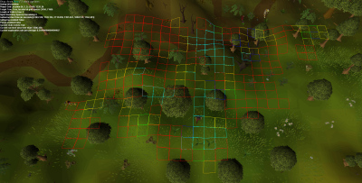

Q-Learning Agent in OSRS
An AI project exploring a Q-learning agent in Old School RuneScape. Visit the repository for the project details and code.
View project on GitHubA little about my background, the projects I’ve worked on, and what I’m proud of.
Get to know meI’m a first-generation immigrant from England, a graduate of Southwestern University and an experienced full stack software engineer.
My computer science journey started way back in 2014, when I was a freshman in high school. I was fortunate enough to have beginner CS classes offered, and ever since the first day I was hooked. I started off in Java making games like pong, moved into Lua and some mobile application development, and finished inside Unity using C# to write scripts and make my own video game. Initialy, I was excited to continue my journey with the intention of eventually becomming a video game designer. However, the more I learned about Computer Science, the more I realized how many opportunities there were in the field. This led me down a more rightous path, with the intention of one day using my knowledge and skills to help the world however I can.
I spent my first year of University at Houston Community College, in order to save some money and knock out all the basic courses. This meant that once I made it to Southwestern University I was able to hit the ground running and learn all about Computer Science. Some of my favorite courses I got to take include : Graph Theory, Artificial Intelligence, Cybersecurity, Numerical Analysis, and Computer Organization. I also have a passion for Mathematics and Computer Systems, which led me to working at Mathnasium (tutoring students mathematics) as well as on campus as an IT consultant. Even with two jobs, and a full course load, I was able to maintain a 4.0 for most of my time at Southwestern. Until my senior year when I got an A- in my Graph Theory class, dropping me down to a 3.985. This actually taught me a valuble lesson about finding balance through all aspects of life. Regardless, it is good representation of how passionate I am about learning and how dedicated I am to ensuring I give my best in everything I do.
Once I graduated, I landed a job at FactSet, a financial tech company that specializes in sell side technologies. There I got to start my career as a Software Engineer working mainly in C++, Python, SQL, and Vue.JS. My resume goes into more detail about some of the projects I got to work on while I was there. As well as some of the technical skills I gained. My time there was quite turbulent. Managers changed frequently and most of my direct colleagues were overseas. I spent a lot of time at the company working remote and being on-call. I moved around and worked with about 4 different teams while I was there. This led me to seek out new roles where I could directly colaborate with other engineers, and not feel so isolated. I eventually got my second promotion at the company, which led to a team switch and a more involvd role in the Austin office. However, a couple months after my promotion, FactSet took a down turn in the market and let a lot of engineers go, Including me.
Since then, I have taken time to re evaluate my priorities and long term career goals. Having time to work on personal projects and explore new technologies has really reivigorated my passion for Softare Development. Next up, I hope to find a new role where I can continue to grow and develop as an Engineer. My main objectives are to find other like minded engineers to colaborate and learn from. As well as, work on complex problems that challenge me and push me to develope intricate and elegant solutions.

An AI project exploring a Q-learning agent in Old School RuneScape. Visit the repository for the project details and code.
View project on GitHub
A personal scheduling app for organizing tasks and seeing what’s ahead. Switch between daily, weekly, and monthly views to plan at a glance.
View project on GitHubAccomplishments and achievements will be added here.